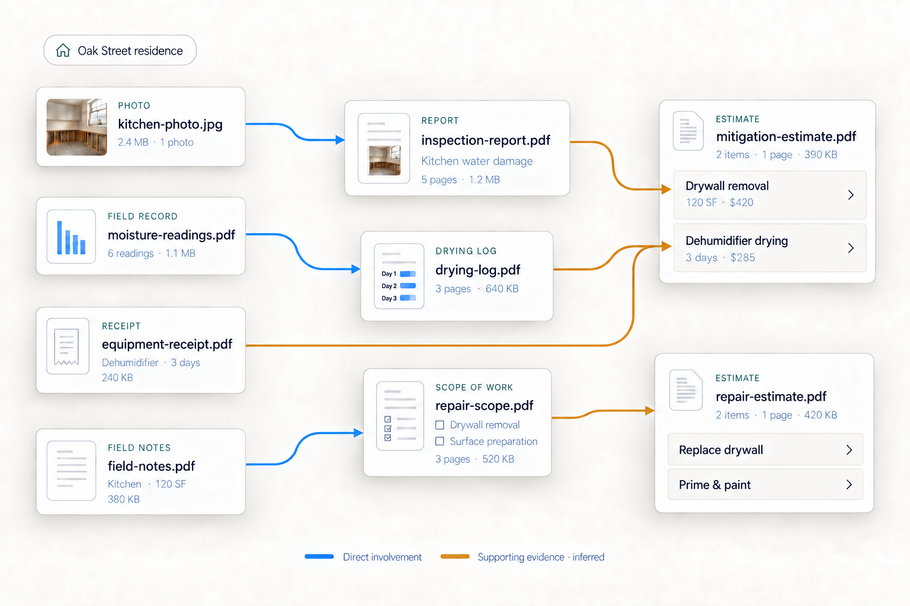

Every file connected.
Every job clearer.
A clearer way to work with your restoration job files. Prism connects your estimates, reports, receipts, and photos so you can see the whole picture.
Built for restoration teams.
01 / Introducing Prism
The whole job.
All the connections.
When you need to justify an estimate item, the supporting evidence may be spread across reports, receipts, and photos. Prism brings those files together, with connections you can trace back to the source.

-
Consolidate information
All your jobs in one place. Upload a job’s estimates, reports, receipts, and photos, and Prism shows how every file connects.
-
Easy to format
Your files stay in your format. Prism reads PDFs, including scanned pages, and JPEG or PNG photos, and makes their contents searchable.
-
No-friction integration
Upload the files your team already produces. You don’t have to change how you create job documents or re-enter anything.
02 / The people behind Auric
A small team.
A shared focus.
We’re Auric Software: three software engineers, co-founders, and UC San Diego graduates. We build Prism ourselves, with a focus on making restoration workflows simpler.
03 / Let’s build something useful
Less searching.
More clarity.
Prism hasn’t launched yet. Work in restoration? Join our launch list or tell us how your team handles job files today. You’ll be talking directly with the founders.
founders@auricsoftware.com